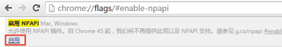
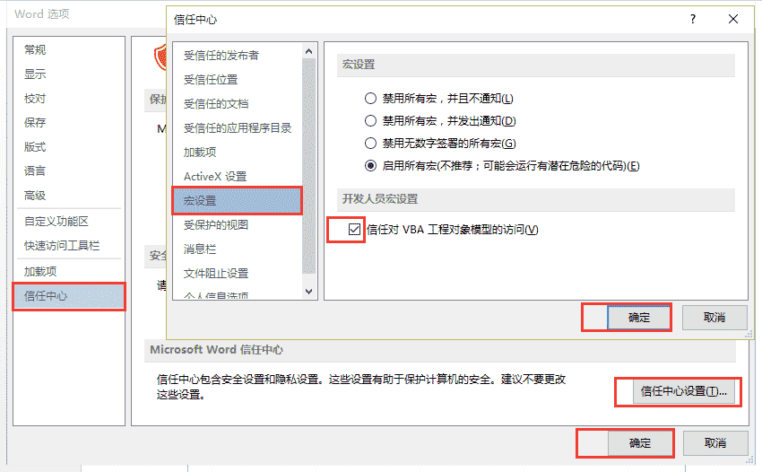

2.3 插件问题
1、插件安装后，仍不能在线打开文档？
（1）如果您使用的是IE 内核浏览器，请您查看浏览器头部是否有加载active控件的提示条，如有，请点击它选择允许加载。
（2）如果您使用的360 浏览器，请您在地址栏内输入：chrome://flags/#enable-npapi后，点击“启用”。
启用后，请您回到撰写教案页面按电脑键盘上的F5刷新，一般问题就能够得到解决了。如果您刷新后，地址栏仍出现阻止插件加载的提示，请点击允许。
（3）如还不能解决，请联系客服010-82782868（9:00~22:00）。
2、插件安装后打开线上资源显示乱码？
这类问题多是由于线上资源是用高于您电脑上office版本撰写的，请升级您的office 版本。例：您的office是2003版本，请升级到2013版本后再进行查看。
3、撰写教案时，点击课题后，课题却不能自动显示为文档标题？
请在您的电脑上进行如下设置： 请打开一个word文档，点击左上角的“文件”，然后按下图提示进行设置。
